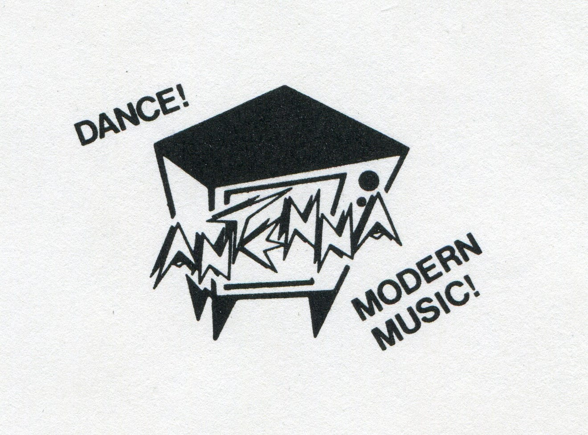

The Antenna Club:
Tin Ceilings, Sticky Floors, and 1588 Madison After Dark
If you walked into 1588 Madison on a Tuesday night in the eighties or early nineties, your sneakers instantly stuck to the linoleum. The room was dark, narrow, and smelled like clove cigarettes, damp leather, and decades of spilled draft beer.
That was The Antenna Club. It was barely wider than a bowling alley, but for fifteen years, it was the absolute beating heart of underground Memphis music. It was where the city kept its teeth.
Living right down the street around Madison & Belvedere, the Antenna wasn’t just a bar you visited; it was the neighborhood’s living room for anyone who didn’t fit into suburban shopping malls or polished country clubs. You’d stand shoulder-to-shoulder with art school dropouts, bike messengers, line cooks, and garage musicians while the tin ceiling tiles rattled from the bass amps.
Nobody cared about corporate polish. Nobody was staring at glowing phone screens. You went there to feel something real—unfiltered volume, raw feedback, and a community of misfits who knew that rock & roll was supposed to be dangerous, loud, and honest.
The neon antenna sign went dark years ago, and the building has lived other lives since. But the grit of 1588 Madison permanently shaped how I look at design, art, and craftsmanship: make it truthful, make it bold, and never apologize for having an edge.
The Original Mark: “Dance! Antenna Modern Music!”

Before the digital era, underground shows were summoned by photocopied cardstock taped to telephone poles along Madison and Cooper. The defining graphic emblem was this iconic retro television set radiating the jagged, lightning-bolt wordmark: “DANCE! ANTENNA MODERN MUSIC!”
In October 2019, the Shelby County Historical Commission officially honored 1588 Madison Avenue with a permanent historical marker. In the wearable memorial design, that original TV emblem sits proudly in the club’s front window beneath the vintage Coca-Cola lightbox—flanked by traditional American tattoo swallows, Southern magnolia blooms, and heirloom roses.
This design is an archival memorial to 1588 Madison Ave, the rattling tin ceiling, and the loud nights that raised us.